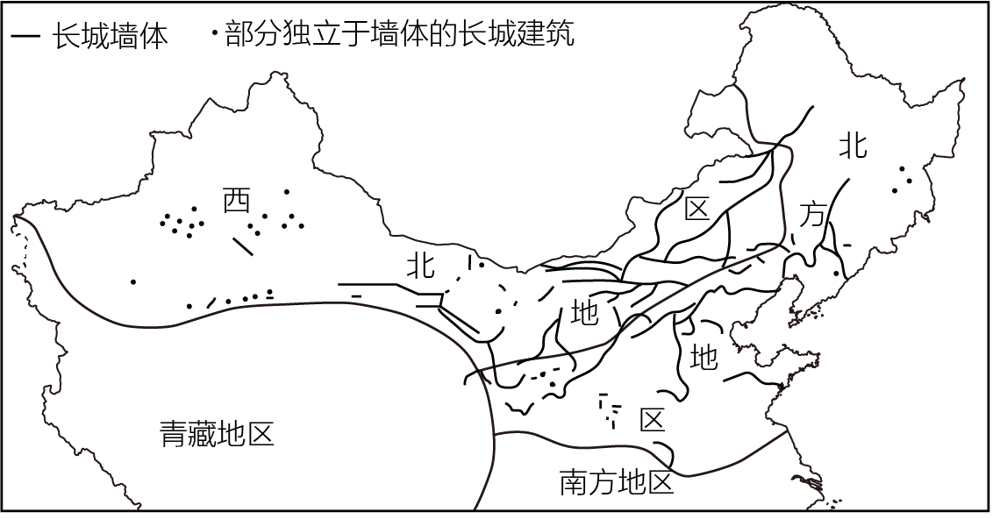

2023年北京中考地理 第7题 解析
7. 乙地为（ ）
A. 乌鲁木齐B. 北京C. 武汉D. 广州
【答案】5. D 6. D 7. B
【解析】
【5题详解】
受东南季风的影响，读图可知，我国年降水量自东南沿海向西北内陆递减，故选D。
【6题详解】
四地中，甲地是乌鲁木齐，属于温带大陆性气候，降水稀少，降水季节变化较小，A错误。乙地是北京，雨季最长的是丁地广州，B错误。丙地6月降水量最大，C错误。丁地广州年降水量最大，D正确。故选D。
【7题详解】
乙地夏季高温多雨，冬季寒冷干燥，为温带季风气候，是北京，B正确。乌鲁木齐是温带大陆性气候，武汉和广州为亚热带季风气候，ACD错误。故选B。
【点睛】气候类型的判读三步法：以温（最高温）定球、以温（最低温）定带、以水（降水的季节分配和降水量）定型。
长城是我国现存规模最大的文化遗产。图为我国长城分布示意图。读图，完成下面小题。
